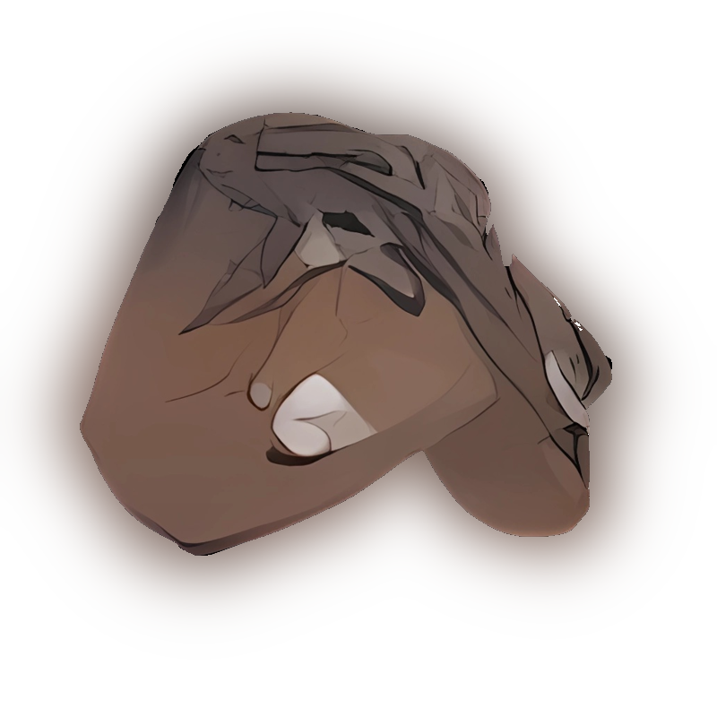

Артефакты
Бенгальский огонь
Находится около аномалий типа «электра». Довольно распространённый и недорогой артефакт. Тем не менее ценится среди исследователей Зоны за его свойства.
Вспышка
«Электра» изредка порождает этот артефакт. Сталкеры используют его с большой охотой из-за его неплохих качеств. Неплохая цена и приятный внешний вид делают его интересным для коллекционеров.
Лунный свет
Вырожденный случай активности аномалии «электра». Видимо, такую замечательную округлую форму можно получить, если подвергнуть аномалию термовоздействию. Дорогой артефакт.
Кровь камня
Найти этот артефакт можно возле аномалий «карусель». Представляет собой довольно уродливое красноватое образование из спрессованных и причудливо изогнутых полимеризированных остатков растений, почвы и костей. Довольно распространён и слабоэффективен.
Ломоть мяса
Существует поверье, что в этом артефакте заключена сила погибших в аномалии людей. Из-за пока неизученной способности артефакта заживлять раны активно разыскивается учёными и религиозными сектами. Вырабатывается аномалией «карусель». Стимулирует усиленный рост клеток. С другой стороны, молодые клетки организма более восприимчивы ко многим видам физического урона. Артефакт попадается не часто, но его нельзя назвать уникальным.
Душа
Очень редко попадается рядом с аномалиями «карусель». Найти такой артефакт удаётся лишь единицам, и мало кто его вообще видел. Он имеет приятную форму и не менее приятную цену.
Слизь
Точно известно, что артефакт порождён аномалией «холодец». При ношении его на поясе раны меньше кровоточат, хотя тело хозяина становится уязвимым к различным ожогам.
Слизняк
Формируется аномалией «холодец». Негативные свойства этого артефакта компенсируются тем, что он повышает свёртываемость крови. Такой артефакт нечасто можно встретить, и за него дают неплохую цену.
Слюда

Аномалия «холодец» способна породить такой артефакт при редчайшем, экстремальном наборе физических условий. В результате получается полупрозрачный твёрдый объект. Артефакт дорогой и редкостный. Ношение артефакта на поясе значительно уменьшает поражение от аномалий «ржавые волосы» и «жгучий пух» и отпугивает хищников, однако при длительном ношении приводит к тому, что любая царапина становится смертельно опасной из-за ускоренных кровотечений. Цена высокая. Интерес к артефакту проявляют научные организации.
Медуза
Артефакт гравитационной природы, обладающий способностью активно притягивать и поглощать радиоактивные частицы, тем самым уменьшая облучённость организма. Широко распространён в Зоне; за её пределами широко, хотя и негласно, используется при лечении острой лучевой болезни.
Каменный цветок
Рождается в аномалии «трамплин». Такой артефакт можно найти в немногих участках Зоны. Вкрапления металлических соединений дают красивую игру света. Рассматривание этого артефакта в свете костра ночью замечательно успокаивает.
Ночная звезда
Этот замечательный артефакт формируется аномалией «трамплин». Использование артефакта требует нейтрализации смертельного радиоактивного излучения. Дорогой и редкостный, он чрезвычайно интересен для научных экспедиций и прочих исследователей активности Зоны.
Мамины Бусы
Образование, состоящие из 2-х линий из скреплённых друг с другом шариков и соединённых тонкими палочками, исходящими из осевого стержня. Имеет серо-коричневый цвет и жёлто-оранжевое свечение.
Выверт
Находится около аномалий типа «воронка». При контакте с телом распространяет направленное излучение, защищающее от царапин или ран, нанесённых холодным оружием. Такой артефакт найти несложно, потому и деньги за него дают небольшие.
Грави
Можно обнаружить около аномалий типа «воронка» или у другого сталкера. При ношении некоторая часть радиоактивных лучей накапливается в организме, в то время как основные пучки расходятся радиально от тела. Цена средняя.
Золотая рыбка
Порождается аномалией «воронка». Активизируется теплом тела. Решай, что хуже — радиация или ножевые ранения, и выбирай из двух зол меньшее. Во всяком случае, артефакт можно дорого продать.
Колобок
Когда держишь эту загадку Зоны в руках, чувствуешь, как кожа грубеет и становится менее чувствительной. Пробить пулей её всё ещё легко, а вот порезать — гораздо сложнее.
Колючка
Результат взаимодействия аномалии «жгучий пух» и тела невнимательного сталкера. Шипастый артефакт колет тело владельца, как бы его ни крепить. Но он же помогает очищению организма от радионуклидов. Довольно распространённый и дешёвый.
Кристальная колючка
Кристаллизируется в аномалии «жгучий пух». Выводит радиацию из организма естественным путём. То есть через уши вместе с некоторым количеством крови. Возможна потеря крови и через другие отверстия. Попадается нечасто и довольно эффективен, чем заслужил себе стабильную цену на рынке артефактов.
Морской ёж

Аномалия «жгучий пух» очень редко порождает такой артефакт. Повышается кровяное давление, организм избавляется от большого количества красных кровяных телец. Но вместе с ними из организма выходит накопленное излучение. Поможет при проходе через высоко радиоактивные зоны (примечание: иметь не меньше двух штук). Сахаров в своей фундаментальной работе «Ионизация и поляризация компонентов редких артефактов» заметил, что состав этого формирования обладает критической стабильностью и добиться создания такого артефакта в условиях лаборатории в ближайшие десятилетия нереально.
Капли
Формируется аномалией «жарка» при высоких температурах. Внешне выглядит как почерневшее каплевидное образование с глянцевой поверхностью, покрытое трещинами.
Огненный шар
Кристаллизируется в аномалии «жарка». Хорошо борется с радиоактивностью, хотя ускоренный энергообмен изнашивает мышцы двигательного аппарата. Долго бежать не получится. Артефакт излучает тепло.
Кристалл
Получается при попадании тяжёлого металла в аномалию «жарка». Этот артефакт замечательно выводит радиацию. Такой артефакт высоко ценится сталкерами, и мало где его можно добыть.
Пустышка
При ношении этого артефакта денатурация белков проходит медленнее. Другими словами, плоть устойчивее к высоким температурам и меньше обгорает. Сама по себе это дорогая и редкостная вещь.
Пружина
По мнению некоторых исследователей-теоретиков, этот артефакт представляет собой гибрид «Батарейки» и «Пустышки».
Батарейка
Происхождение этой вещи окутано завесой научной тайны. Понятно, что в его состав входят диэлектрические элементы, но при каких физических условиях он формируется — науке неизвестно.